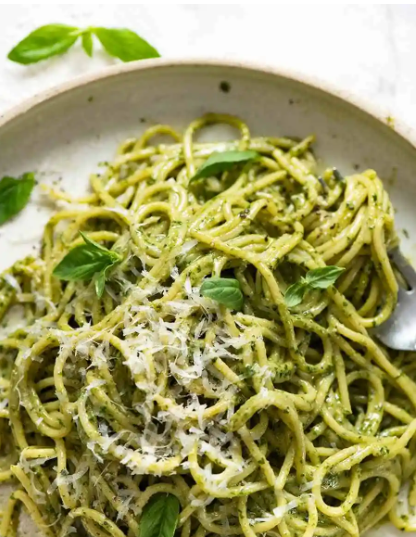

Pesto Parm

Description
This pesto parm pasta is sure to be juicy and extra tasty! Here's how to make it right:
Ingredients
- 1/2 cup pesto
- 10-12 oz. pasta of choice
- 2 tsp salt
- 3/4 cup pasta cooking water
- Extra Parmesan for serving
Steps
- Bring a large pot of water to boil with the salt.
- Add pasta and cook for the length of time per the packet.
- Just before draining, scoop out 1 cup of the pasta cooking water
- Drain pasta in a colander, leave it for a minute.
- Transfer pasta to a bowl (do not use pasta cooking pot, too hot)
- Add pesto and 1/4 cup of pasta water. Toss to coat pasta in pesto, adding more water if required to make pasta silky and saucy, rather than dry and sticky.
- Taste, add more salt and pepper if desired.
- Serve immediately, garnished with fresh parmesan